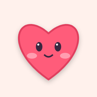
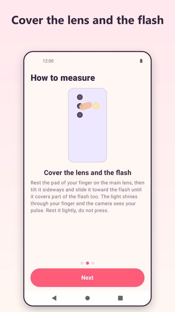
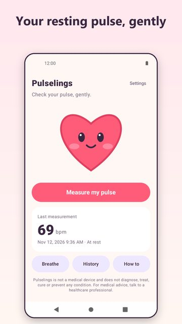
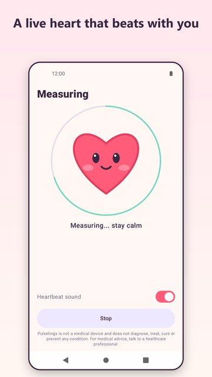
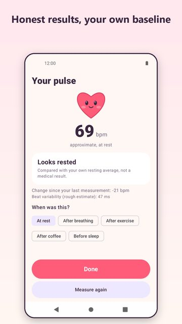
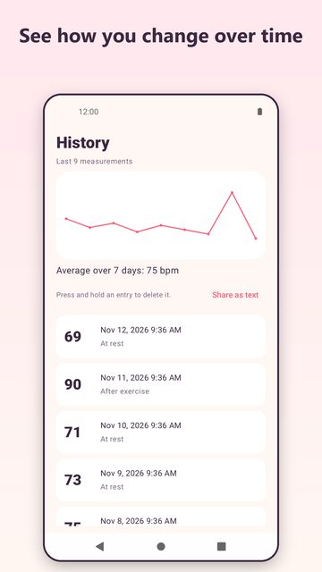
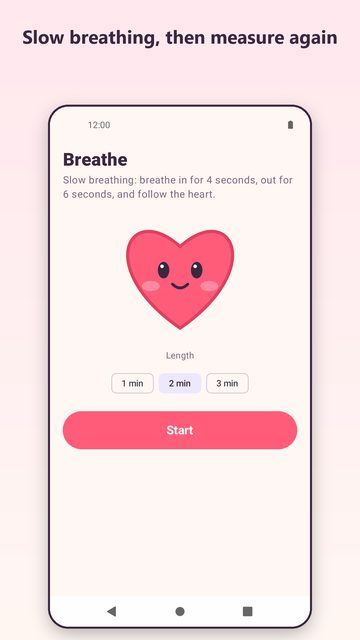

Pulselings
Check your resting pulse with your camera. Gentle, private, no account.
Meet Pulselings, a little heart that helps you check your resting pulse in about half a minute, using only your phone's camera and flash. How it works: rest the tip of your finger gently over the rear camera and the flash. The light shines through your fingertip, the camera sees tiny colour changes with every heartbeat, and Pulselings turns them into an estimate of your pulse. A short guide shows exactly where to place your finger.


Screenshots






Features
Live heart: watch the little heart beat along with you, with an optional heartbeat sound
Clear guidance: simple tips tell you when to hold still, press lighter or move your finger
Honest results: if the signal is not clear, Pulselings says so instead of guessing
Your own baseline: after a few resting measurements it compares today with your own usual pulse, not with other people
Breathing mode: slow 4-in, 6-out breathing with a gentle animated heart, then measure again
History: a simple chart, your 7-day average and tags such as at rest, after exercise or after coffee
Private: no account, your measurements stay on your phone
No ads while you measure; a small banner may appear on the home and history screens
Good to know: Pulselings needs a phone with a rear camera and flash. Results are approximate and depend on how still you stay and how you place your finger. Pulselings is not a medical device and does not diagnose, treat, cure or prevent any condition. For medical advice, talk to a healthcare professional.